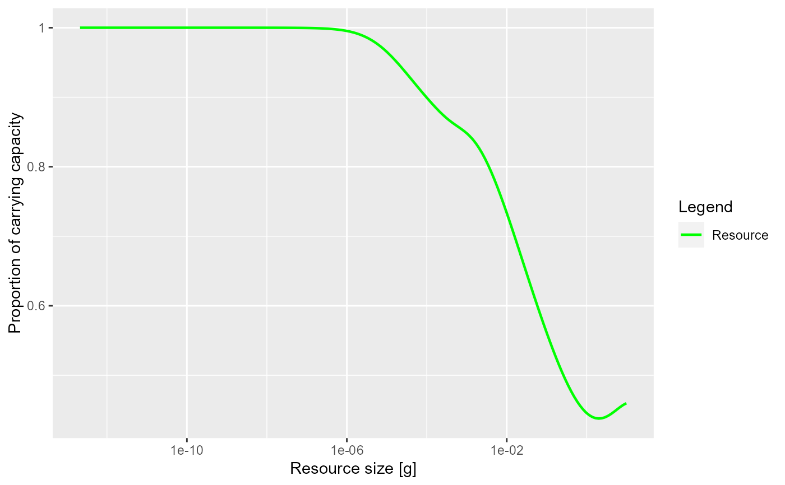

Plot the proportion of the resource spectrum(s) compared to their carrying capacity
Source:R/plots.R
plotResourceLevel.RdPlot the proportion of the resource spectrum(s) compared to their carrying capacity
Value
A ggplot2 object, unless return_data = TRUE, in which case a data
frame with the three variables 'w', 'value', 'Resource' is returned.
See also
plotting_functions
Other plotting functions:
plotDeath(),
plotEnergyBudget(),
plotResourcePred(),
plotYieldVsF(),
plotYieldVsSize()
Examples
# \donttest{
plotResourceLevel(NS_params)

# Returning the data frame
fr <- plotResourceLevel(NS_params, return_data = TRUE)
str(fr)
#> 'data.frame': 179 obs. of 3 variables:
#> $ w : num 2.12e-13 2.53e-13 3.02e-13 3.61e-13 4.30e-13 ...
#> $ value : num 1 1 1 1 1 ...
#> $ Resource: chr "Resource" "Resource" "Resource" "Resource" ...
# }